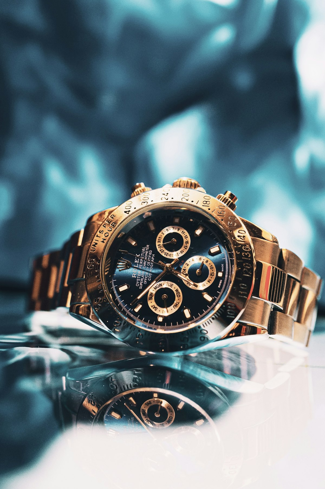

Escapement Physics
The Physics of the Swiss Lever vs Co-Axial Escapement: Impulse Mechanics
Sliding friction vs radial tangential impulse, George Daniels' geometry, pallet stone wear, and lubrication degradation.
Technical treatises on escapement physics, silicon hairsprings, hand anglage, column-wheel chronographs, and 6-position chronometry.
Sliding friction vs radial tangential impulse, George Daniels' geometry, pallet stone wear, and lubrication degradation.
DRIE plasma etching, 15,000 Gauss magnetic immunity, thermo-compensating oxide layers, and terminal curve geometry.

Berceau 45° rounded chamfering, gentian wood pegwood polishing, razor inward angles (angles rentrants), and Geneva Seal rules.

8-pillar solid column wheels, vertical friction clutches vs lateral sliding clutches, and chronograph hand jumping elimination.

Breguet 1801 single-axis cages, multi-axis spherical gyrotourbillons, center-of-gravity poising, and constant-force remontoires.
Delta error calculations, dynamic balance poising, thermal chamber testing, and 15,000 Gauss magnetic exposure protocols.